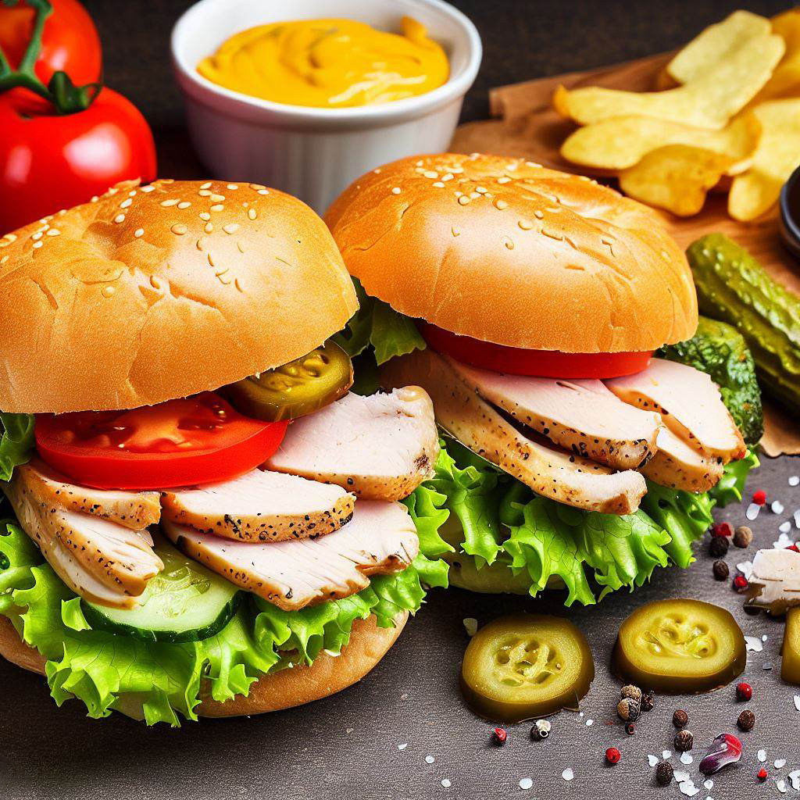

Chicken Sandwich

Description
A mouthwatering chicken sandwich recipe that combines juicy chicken with fresh vegetables and flavorful sauces.
Ingredients
- Chicken breast fillet - 1
- Burger buns - 2
- Lettuce leaves - 2
- Sliced tomatoes - 2
- Sliced pickles - 4
- Mayonnaise - 2 tbsp
- Mustard - 1 tbsp
- Ketchup - 1 tbsp
- Salt - 1/2 tsp
- Black pepper - 1/4 tsp
Steps
- Season the chicken breast fillet with salt and black pepper.
- Heat a grill or stovetop pan.
- Cook the chicken fillet on the grill or pan until it's fully cooked and has nice grill marks.
- While the chicken is cooking, split the burger buns and lightly toast them.
- Spread mayonnaise, mustard, and ketchup on the inside of the bun halves.
- Place lettuce leaves, sliced tomatoes, and sliced pickles on the bottom bun.
- Once the chicken is done, place it on top of the vegetables.
- Close the sandwich with the top bun.
- Your mouthwatering chicken sandwich is ready to enjoy!